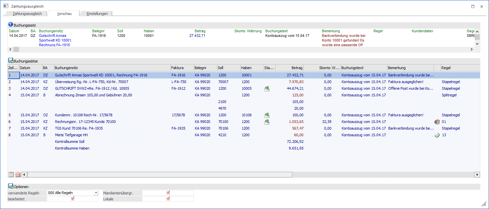
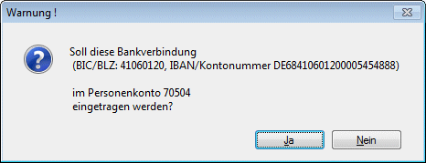
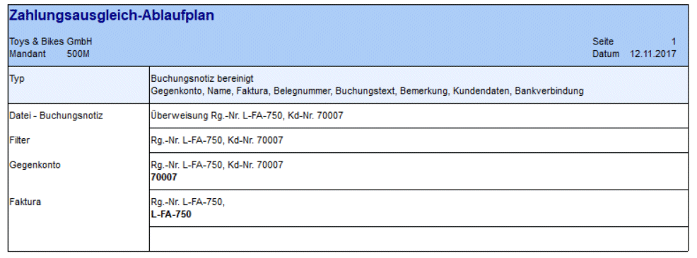
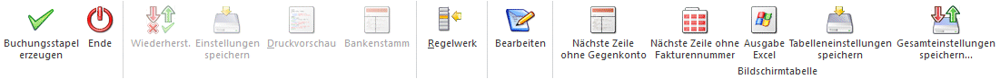
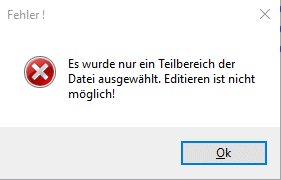

Die Vorschau der Buchungssätze aufgrund der eingelesenen Daten erhalten Sie im Register "Vorschau".
Die Beträge in der Vorschau sind unterschiedlich eingefärbt.
ü Blau
Sollbeträge auf dem
Bankkonto
ü Rot
Habenbeträge auf dem
Bankkonto
Jeder Buchungssatz, der in der Tabelle durch Anklicken aktiviert wird, wird über der Tabelle der Buchungssätze in der Info Buchungssatz detailliert angezeigt.
In der Spalte Buchungstext wird jener Text angezeigt, der bei Durchführung des Zahlungsausgleiches tatsächlich in die Buchungszeile übergeben wird (max. 50 Zeichen). Bei neueren CREMUL-Dateien wird als Buchungsnotizen auch die Anschrift des Zahlers übergeben. Diese Notiz wird auch bei der erstellten FIBU-Buchung als Buchungs-Notiz verwendet.
Die Regeln, die zu einer Buchungszeile hinterlegt sind, können mandantenübergreifend oder mandantenspezifisch sein. Es wird das entsprechende Symbol in der Tabelle angezeigt.
Unterhalb der Buchungszeilen wird in blau eine Kontrollsumme der Sollbeträge und in Rot die Kontrollsumme der Habenbeträge angedruckt. Diese Summen beinhalten alle Summen und auch alle Währungen - sie sind nur zur Kontrolle gedacht.
Optionen
Ø verwendete Regeln
Über diese Combobox wird eine Regelgruppe ausgewählt, der im Regelwerk diverse Regeln zugeordnet sind. Es werden dann nur die Regeln dieser Regelgruppe für die Vervollständigung der Buchungssätze in der Vorschau berücksichtigt. Im Regelwerk können vorab bereits Regeln hinterlegt werden, mit denen die Eingabefelder im Regel-Assistenten bereits gefüllt werden. Die Anlage der Regelgruppen selbst erfolgt über den Button Regelwerk.
Ø Bearbeitet
Die über den Bearbeitungsmodus (Button Bearbeiten) bearbeiteten Buchungszeilen werden berücksichtigt.
Ø Mandantenübergr.
Es werden bei aktivierter Checkbox die mandantenübergreifenden Regeln berücksichtigt.
Ø Lokale
Es werden bei aktivierter Checkbox die lokalen (mandantenspezifischen) Regeln berücksichtigt.
Automatischer Abgleich der Zahlungsdaten der Bankdatei mit der Bankverbindung im Personenkonto
Erfolgt eine Zahlung eines Kunden oder eine Abbuchung eines Lieferanten wird bei der Zuordnung zum entsprechenden Personenkonto die Bankverbindung überprüft. Stimmt sie nicht mit der Bankverbindung aus der Bankdatei überein, wird das mit einem Symbol in der Vorschau in der Spalte Stammdaten angezeigt.
Im
Personenkonto existiert die Bankverbindung aus der Bankdatei noch
nicht
Beim Doppelklick auf das Symbol kommt eine Abfrage und die Bankverbindung kann in das Personenkonto übernommen werden. Existiert bereits eine Standard-Bankverbindung im Personenkontenstamm, dann wird die Bankverbindung in die "weiteren Bankverbindungen" des Personenkontos übernommen.

Durch Anklicken einer beliebigen Buchungszeile gelangen Sie in den Regelassistenten für den Zahlungsausgleich, um die Konten- und/oder Fakturen-Selektion durchzuführen.
Ablaufplan
Über das Kontextmenü steht der Ablaufplan zur Verfügung.
Der Ablaufplan verschafft einen Überblick über die Daten, die das Programm ermittelt hat, da es mittlerweile sehr viele Einstellungen und Optionen für die einzelnen Tabellen-Spalten gibt.

Buttons

Ø Buchungsstapel erzeugen
Durch Anklicken des Buchungsstapel erzeugen - Buttons wird der Zahlungsausgleich durchgeführt, wobei alle Buchungen in den nächsten freien Zahlungsstapel ab Stapelnummer 300 abgelegt werden. Die Buchungen können dann durch Anwahl des Menüpunktes Buchen/ Buchen/Dialog-Stapel und Laden des ZAGL-Buchungsstapels verbucht werden.
Ø Ende
Durch Anklicken des Ende-Buttons wird der Programmpunkt beendet.
Ø Regelwerk
Durch Anklicken des Regelwerk-Buttons öffnet sich das Regelwerk, in dem alle bisher definierten Regeln aufgeführt sind.
Ø Bearbeiten
Über den Bearbeiten-Button schaltet das Vorschau-Fenster in den Editiermodus um. Danach können einige Felder der Buchungszeile manuell bearbeitet werden. Die manuelle Änderung einer Zeile übersteuert das Regelwerk.
Im Bearbeiten-Modus wird sofort gespeichert, es gibt somit keinen OK-Button für das Speichern. Mit F5 wird der Buchungsstapel erzeugt.
Der Bearbeiten-Modus kann durch nochmaligen Klick auf den Bearbeiten-Button wieder deaktiviert werden. Es werden dann alle Änderungen (nach einer entsprechenden Ja/Nein-Abfrage) wieder verworfen.
Werden nur Teilbereiche einer MT940-Datei eingelesen, z.B. ein Kontoauszug wird eingelesen wenn mehrere Kontoauszüge in der MT940-Datei existieren, kann der Bearbeiten-Modus nicht aktiviert werden. Es kommt dann eine entsprechende Meldung.

Ø Nächste Zeile ohne Gegenkonto
Ausgehend von der aktuellen Zeile wird die nächste Zeile ohne Gegenkonto gesucht und der Fokus dorthin gesetzt.
Ø Nächste Zeile ohne Fakturennummer
Ausgehend von der aktuellen Zeile wird die nächste Zeile ohne Fakturennummer gesucht und der Fokus dorthin gesetzt.